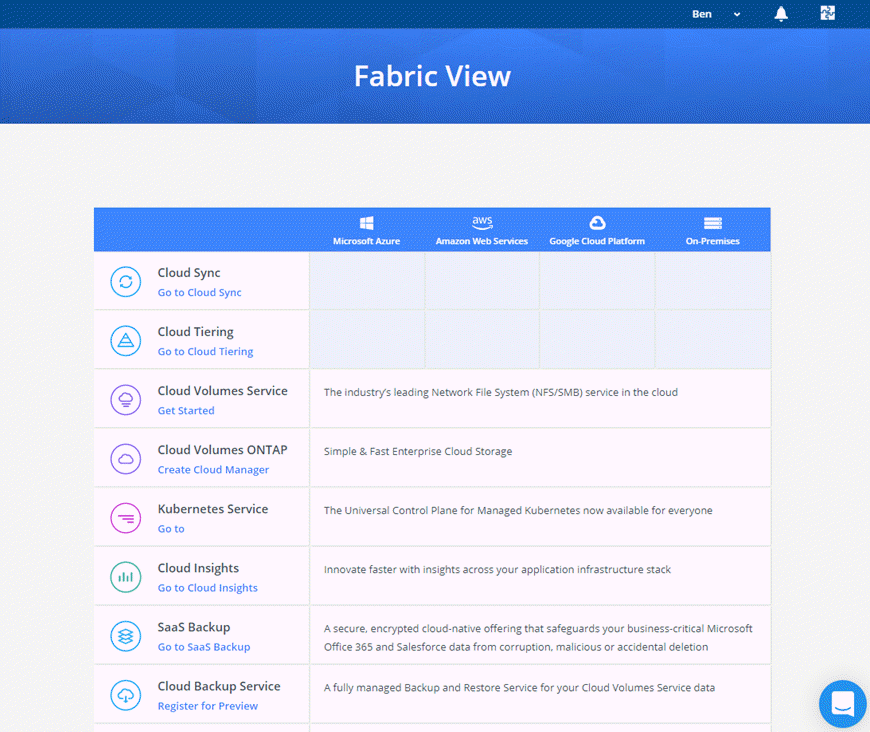

Release notes
Release notes
NetApp Cloud Central
 Suggest changes
Suggest changes
NetApp Cloud Central provides a centralized location to access and manage NetApp cloud data services. These services enable you to run critical applications in the cloud, create automated DR sites, back up your SaaS data, and effectively migrate and control data across multiple clouds.
Cloud Manager’s integration with NetApp Cloud Central provides several benefits, including a simplified deployment experience, a single location to view and manage multiple Cloud Manager systems, and centralized user authentication.
With centralized user authentication, you can use the same set of credentials across Cloud Manager systems and between Cloud Manager and other data services, such as Cloud Sync. It’s also easy to reset your password if you forgot it.
